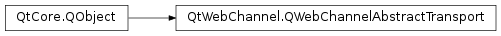

QWebChannelAbstractTransport¶
Detailed Description¶
Communication channel between the C++
PySide2.QtWebChannel.QWebChannelserver and a HTML/JS client.Users of the
PySide2.QtWebChannel.QWebChannelmust implement this interface and connect instances of it to thePySide2.QtWebChannel.QWebChannelserver for every client that should be connected to thePySide2.QtWebChannel.QWebChannel. The Qt WebChannel Standalone Example shows how this can be done using Qt WebSockets .Note
The JSON message protocol is considered internal and might change over time.
See also
Qt WebChannel Standalone Example
-
class
PySide2.QtWebChannel.QWebChannelAbstractTransport([parent=Q_NULLPTR])¶ Parameters: parent – PySide2.QtCore.QObjectConstructs a transport object with the given
parent.
-
PySide2.QtWebChannel.QWebChannelAbstractTransport.messageReceived(message, transport)¶ Parameters: - message –
PySide2.QtCore.QJsonObject - transport –
PySide2.QtWebChannel.QWebChannelAbstractTransport
- message –
-
PySide2.QtWebChannel.QWebChannelAbstractTransport.sendMessage(message)¶ Parameters: message – PySide2.QtCore.QJsonObjectSends a JSON
messageto the remote client. An implementation would serialize the message and transmit it to the remote JavaScript client.
© 2018 The Qt Company Ltd. Documentation contributions included herein are the copyrights of their respective owners. The documentation provided herein is licensed under the terms of the GNU Free Documentation License version 1.3 as published by the Free Software Foundation. Qt and respective logos are trademarks of The Qt Company Ltd. in Finland and/or other countries worldwide. All other trademarks are property of their respective owners.